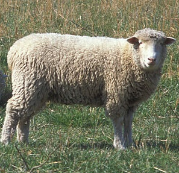

In this interactive, you will be able to play around with and visualize how various 2x2 matrices transform points in space. The primary function of a matrix is as something that can be multiplied by a vector to get another vector. As such, we can think about matrices as functions that take vectors as inputs and output vectors. If we think about 2 dimensional vectors as points in space ( the vector
a
b
as the point (a,b)) then matrices are functions that move points in 2D space somewhere else. We can visualize these transformations by taking an image and moving each point of the image to the point we get when we multiply the matrix by it. As you change the coefficients in the matrix directly above the picture, the end points of the blue and red vectors (representing e1 and e2 respectively), the points of the grid, and the points in the image of the sheep will all move to their image under the matrix transformation (i.e. if they start at (x,y), they'll wind up at (a,b), where
a
b
= M
x
y
).
More detailed instructions can be found at the bottom of the page.
Determinant:
Min x:
Max x:
Min y:
Max y:
Show original axes
Show original grid
Show transformed axes
Show transformed grid
Show unit parallelogram
Show unit sheep
Show arbitrary vector
Show guessing game target
Morphing
Clicking the "Morph" button will show you an animation of points moving from their original positions to their new positions after the matrix transformation. In reality, when we apply a matrix transformation, there is no moving, no inbetween frames. The only things we have are the starting point, which gets multiplied by the matrix to produce the ending point. However, because all the points in the image are getting moved at once, it is easier to visualize what's happening via these animations.
Show Arbitrary Vector
Scrolling down to below the image and checking the "Show arbitrary vector" box will allow you to add a vector of your own to the original image (it may help to reset the matrix by pressing the "identity" button under the matrix templates when picking your vector). The program will then draw the transformed image of the vector. You can also watch this vector move from its original location to its location after being multiplied by the matrix by clicking the "Morph" button.
Matrix Templates
While it can be fun to play around with the coefficients of a matrix and see what kinds of transformations of space they correspond to, this page also has a collection of matrix templates you can use to create specific transformations of space. Click the button or enter numbers into the template to copy the template to the matrix below.
Matrix Multiplication Workbench
Matrix multiplication corresponds to applying one transformation after the other. Click the "Show Matrix Multiplication Workbench" button to open up a workbench. While the workbench is open, selecting matrix templates will copy them down into the workbench. Clicking the "Morph" button will allow you to visualize the operation of the matrices in the workbench in the order that they would get applied to a vector (from right to left, just like function application). The workbench will also show you the combined effect of all of the matrices as a single matrix. This is the matrix product of the matrices. You can also use the < and > buttons to change the order of matrices in the workbench, and the x button to remove the matrix from the workbench.
Questions to ponder
Take a close look at the red and blue vectors and where they wind up after a matrix transformation. How is this related to the coefficients of the matrix?
Copy some matrix templates into the matrix multiplication workbench. Does changing their order affect the overall transformation? Try this with other matrix templates. It may help to click the "Morph" button to watch the transformations being applied in order.
Pay attention to whether the sheep is facing to its left or to its right. See if you can find any patterns.
Links to matrix transformations elsewhere
Nicky Case has an interactive that uses 3x3 matrices to allow your matrix transformations to also translate images.
Geogebra has an interactive that is similar to this one.
Shadanan.github.io has a similar interactive that allows you to control how far along the "Morph" animation you are by adjusting a slider (this defaults to 0, i.e. no transformation has been applied).
KhanAcademy has a series of youtube videos on matrix transformations.
I am also working on putting together a similar interactive in three dimensions. It is not completed, and currently appears to leak memory, but this should be safe provided you do not mind restarting your browser.

Original image by Natural Resources Conservation Service [Public domain], via Wikimedia Commons [https://commons.wikimedia.org/wiki/File:Sheep_and_goats.jpg]